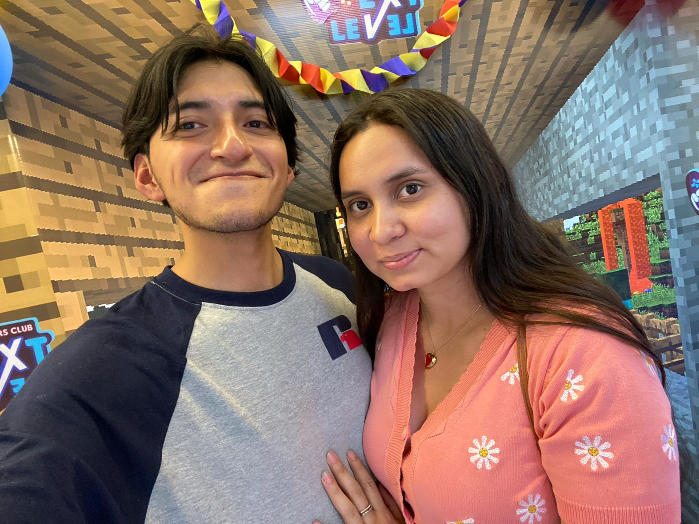

<ion-header [translucent]="true">
  <ion-toolbar>
    <ion-title>
      <strong><em>Perfil</em></strong> 
    </ion-title>
  </ion-toolbar>
</ion-header>

<ion-content [fullscreen]="true">
  <ion-header collapse="condense">
    <ion-toolbar>
      <ion-title size="large">Perfil</ion-title>
    </ion-toolbar>
  </ion-header>
  
  <div class="profile-container">
    <a>
      
    </a>
  </div>
  <div class="button-container">
    <ion-button (click)="goToGitHub()" expand="full" color="tertiary">
      Ir al Repositorio de GitHub
    </ion-button>
  </div>
</ion-content>
